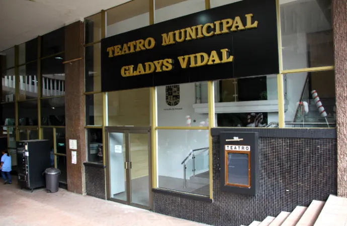
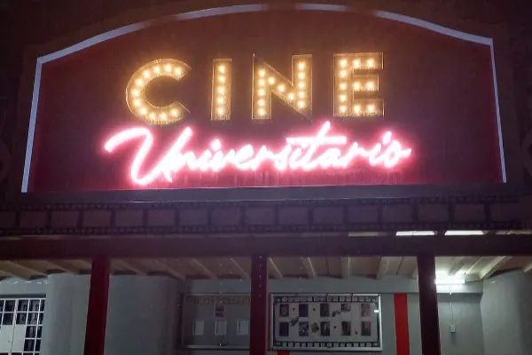

<!DOCTYPE html>
<html lang="es">
<head>
  <meta charset="utf-8">
  <title>Sedes - PyCon Panamá 2025</title>
  <meta content="width=device-width, initial-scale=1.0" name="viewport">
  <meta name="description" content="Sedes del evento PyCon Panamá 2025.">
  <meta name="robots" content="noindex, nofollow">

  <link href="img/pycon25.png" rel="icon">
  <link href="css/bootstrap.min.css" rel="stylesheet">
  <link href="css/style.min.css" rel="stylesheet">
  <link href="css/theme-2025.css" rel="stylesheet">
</head>
<body style="background-image: url('img/Sprinkle_bg.svg');">
  <div data-include="header"></div>

  <!-- Encabezado de Sedes (oculto temporalmente) -->
  <!--
  <header class="container-fluid page-header">
    <div class="container">
      <div class="d-flex flex-column align-items-center justify-content-center text-center" style="min-height: 300px">
        <h1 class="display-4 text-white text-uppercase">Sedes del evento</h1>
      </div>
    </div>
  </header>
  
  <main class="container py-5" role="main">
    <section class="mb-5">
      <h2 class="mb-3">Nuestras sedes</h2>
      <p class="text-muted">Seleccionamos espacios cómodos y céntricos para ofrecer una experiencia agradable y accesible para todas las personas asistentes.</p>
      <ul>
        <li>Ubicaciones céntricas, con acceso a transporte público.</li>
        <li>Espacios con buena acústica y visibilidad.</li>
        <li>Áreas para networking y descanso.</li>
      </ul>
    </section>

    <section class="row align-items-start justify-content-center g-4">
      <article class="col-lg-6 col-md-6 mb-4">
        <div class="destination-item position-relative overflow-hidden mb-2 sombras-personalizadas">
          
          <a class="destination-overlay text-white text-decoration-none" href="https://maps.app.goo.gl/hwGnWg68NfNzppV37" target="_blank" rel="noopener">
            <h5 class="text-white text-center">Teatro Municipal Gladys Vidal</h5>
            <span>15 de octubre</span>
            <span>ver mapa</span>
          </a>
        </div>
        <p class="mt-2">Ubicado en el corazón de la ciudad, ideal para la jornada inaugural con capacidad cómoda y fácil acceso.</p>
        <div class="ratio ratio-16x9">
          <iframe title="Mapa Teatro Municipal Gladys Vidal" src="https://maps.google.com/maps?q=Teatro%20Municipal%20Gladys%20Vidal%20Panam%C3%A1&output=embed" width="100%" height="300" style="border:0" loading="lazy" referrerpolicy="no-referrer-when-downgrade"></iframe>
        </div>
      </article>

      <article class="col-lg-6 col-md-6 mb-4">
        <div class="destination-item position-relative overflow-hidden mb-2 sombras-personalizadas">
          
          <a class="destination-overlay text-white text-decoration-none" href="https://maps.app.goo.gl/yNxx2we7dLqc24bZ7" target="_blank" rel="noopener">
            <h5 class="text-white text-center">Cine Universitario - Universidad de Panamá</h5>
            <span>16 de octubre</span>
            <span>ver mapa</span>
          </a>
        </div>
        <p class="mt-2">Espacio académico con equipamiento adecuado para charlas técnicas y actividades de la comunidad.</p>
        <div class="ratio ratio-16x9">
          <iframe title="Mapa Cine Universitario Universidad de Panamá" src="https://maps.google.com/maps?q=Cine%20Universitario%20Universidad%20de%20Panam%C3%A1&output=embed" width="100%" height="300" style="border:0" loading="lazy" referrerpolicy="no-referrer-when-downgrade"></iframe>
        </div>
      </article>
    </section>
  </main>
  -->

  <div data-include="footer"></div>

  <script defer src="js/components/include.js"></script>
  <div data-include="scripts"></div>
</body>
</html>
